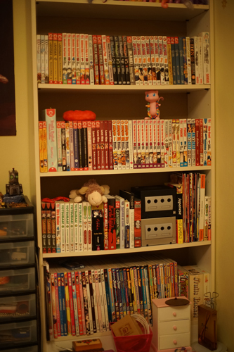

manga library

this is (mostly) for my own personal reference because i cant remember what i own when im outside of my house and i dont want more duplicates
im very excited for the day when i'll have space for my own manga shelf in my own home. i want to live my childhood weeaboo dream
some (a lot) of these were my imoutos but shes too cool for manga now so they're mine now. i didnt mean to collect shojo beat and shonen jump it just happened.
rip shojo beat
- 100% Perfect Girl 2, 3, 4
- +Anima 1, 2, 3
- Absolute Boyfriend 2, 3, 4, 5
- Aishiteruze Baby 1, 5
- Aria 1
- Azumanga Daioh omnibus
- Battle Royale 14, 15
- Beauty Pop 2
- Beyond the Beyond 2
- Black Bird 2, 3, 4, 5
- Blame! 1
- Bleach 1, 2, 3, 4, 5, 6, 7, 8
- Cardcaptor Sakura 1
- Chobits 1, 4, 4
- Chrono Crusade 1
- Cowa
- Desert Coral 1
- Eden 1
- Eureka Seven 1, 2, Collection 2
- Faeries' Landing 1, 2
- Fruits Basket Omnibus 1, 2, 3
- fushigi yuugi 2
- Gravitation 1
- Higurashi Abducted by Demons 1, 2 Cotton Drifting 1, 2
- Inukami Omnibus 1, Omnibus 2, 3
- Kedamono damono 1
- kimi no todoke 1, 2
- Kingdom Hearts II 1
- Kingdom Hearts Chain of Memories 1, 2
- Kokoro Connect 1
- K-on! College
- La Corda d'Oro 1, 2, 3
- Loveless 7
- Love Hina 1, 2, 3, 4, 6
- My Neighbor Seki 1, 2
- Naruto 1, 24, 26, 27
- Negima! 1, 2, 3, 4, 5, 6, 7, 8
- Neon Genesis Evangelion Angelic Days 1
- Ouran High School Host Club 2, 3, 4, 5, 6, 7, 8, 9
- Peacemaker Kurogane 1, 2
- Princess Jellyfish complete
- Pokemon Red, Yellow
- Punch 1, 2
- RalGrad 1, 2
- Rozen Maiden 1
- Sakura Taisen 1
- Shugo Chara 2
- Skip Beat 1
- Splatoon 1
- Tokyo Mew Mew 1
- Toradora 1, 2, 3, 4, 5
- Tsubasa 1, 1, 2
- Ultra Maniac 4
- Yotsuba 1, 2, 3, 4, 5, 6, 7
- xxxHolic Omnibus 1
- Zatch Bell 1
german manga
- AAA 2
- Battle Angel Alita Last Order 11 (stripped)
- Chrno Crusade 5 (stripped)
- idol (2008) 1 (stripped)
- Kare Kano 17,18 (stripped)
- Rin! 1 (stripped)
- Silver Diamond 8,9 (stripped)
- Slayers Special 4 (stripped)
japanese manga
- Mahou Shoujo Madoka Magica 3 (signed by Gen Urobuchi)
- Yotsubato! 11
light novels + etc
- Battle Royale
- Death Note Another Note
- Gravitation the Novel
- Socrates in Love
- Zaregoto 1